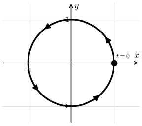
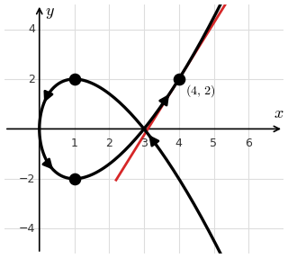

Lesson 65: Parametric Equations
Instead of writing \(y\) as a function of \(x\), we use two equations, each a function of a parameter \(t\).
As \(t\) changes, the points \((x, y)\) trace out a curve. Parametric equations can trace shapes that are not the graph of a single function of \(x\), and they show the direction of motion.
Describe the curve \(x = \cos t\), \(y = \sin t\), for \(0 \le t \le 2\pi\).
The curve is the unit circle. It starts at \((1, 0)\) when \(t = 0\) and travels once around counterclockwise.

Eliminate the parameter to find an equation in \(x\) and \(y\) for \(x = t + 1\), \(y = t^2\).
The curve is a parabola with vertex at (1, 0).
The Slope of a Parametric Curve
Horizontal tangent lines occur where \(\frac{dy}{dt} = 0\) and \(\frac{dx}{dt} \neq 0\).
For \(x = t^2\), \(y = t^3 - 3t\), find the tangent line at \(t = 2\), and find any horizontal tangent lines.
At \(t = 2\): the point is \((4, 2)\), and the slope is \(\frac{12 - 3}{4} = \frac{9}{4}\).
Horizontal tangents: \(3t^2 - 3 = 0\) when \(t = \pm 1\), at the points \((1, -2)\) and \((1, 2)\).

The Second Derivative
For the same curve, find \(\dfrac{d^2 y}{dx^2}\).
Arc Length
Find the length of the curve \(x = t^2\), \(y = \frac{2}{3}t^3\), for \(0 \le t \le \sqrt{3}\).